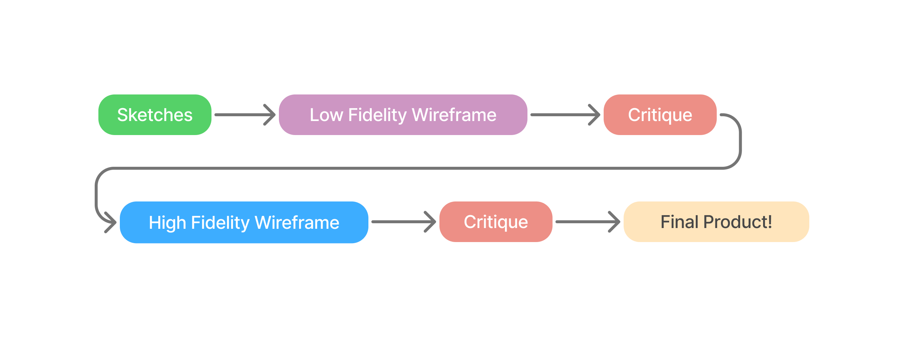
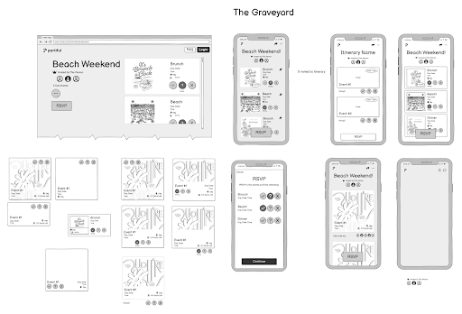

Partiful Itineraries
Designing a smooth interface for multipart events through iterative prototyping

Partiful is the premier Event & Party RSVP platform. But its current interface didn’t support hosts planning multi-part events like weekend trips or bar crawls...
Goal: Create a smooth, intuitive multi-part interface that feels like Partiful—fun, fast, and easy.
Approach
We started with interviews and storyboarding, then built out design flows, low-fi mockups, and high-fidelity prototypes—constantly refining with feedback.
Sketches
We explored RSVP flows, creation options, visibility settings, and layout logic to meet real user needs.
- Should guests RSVP to subevents individually?
- How do we let hosts create multiparts easily, without confusion?
- What’s the cleanest way to show multiple subevents on mobile?
Wireframes
We tested guest and host experiences with lo-fi mockups in Balsamiq.
- RSVP once or RSVP per subevent?
- Host creation flows with +add buttons
- Comment threads and photos scoped to specific subevents
Feedback
We received guidance from Partiful’s product designer and other experienced PMs and researchers.
- Make subevents feel additive—not like separate pages
- Keep things simple with clear defaults (e.g., RSVP to all)
- Support private subevents and per-event tagging
Hi-Fi Prototype
Our final Figma prototype emphasized a party-forward look with multi-part flexibility.
- One page, scrollable itinerary
- Per-subevent RSVP options
- Clean, mobile-first layouts
Conclusion
We built a polished experience that supports how real people party—with room to grow.
Next steps could include edge case testing, RSVP summaries, and integrations with sharing/maps/polls.
